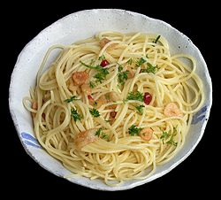

Spaghetti

Description
No two aglio e olio recipes are alike, but this one is pretty true to the classic method. The key is slowly toasting the garlic slices to a perfect golden brown in the olive oil. If it's too light, you don't get the full flavor and if it's too dark it gets bitter. My advice? Do it perfectly.
Ingredients
- Spaghetti: This recipe, which makes about four servings, starts with one pound of uncooked spaghetti.
- Oil: You’ll need ½ cup of olive oil.
- Garlic: Six cloves of thinly sliced garlic lends bold flavor.
- Seasonings: This traditional spaghetti aglio e olio is flavored with crushed red pepper flakes, black pepper, and fresh parsley.
- Cheese: For the most delicious results, grate your own Parmigiano-Reggiano cheese instead of opting for the pre-shredded stuff.
Steps:
- Boil the spaghetti.
- Toast the garlic in olive oil.
- Stir the seasonings into the pasta, then stir in the garlic and oil.
- Toss with cheese.